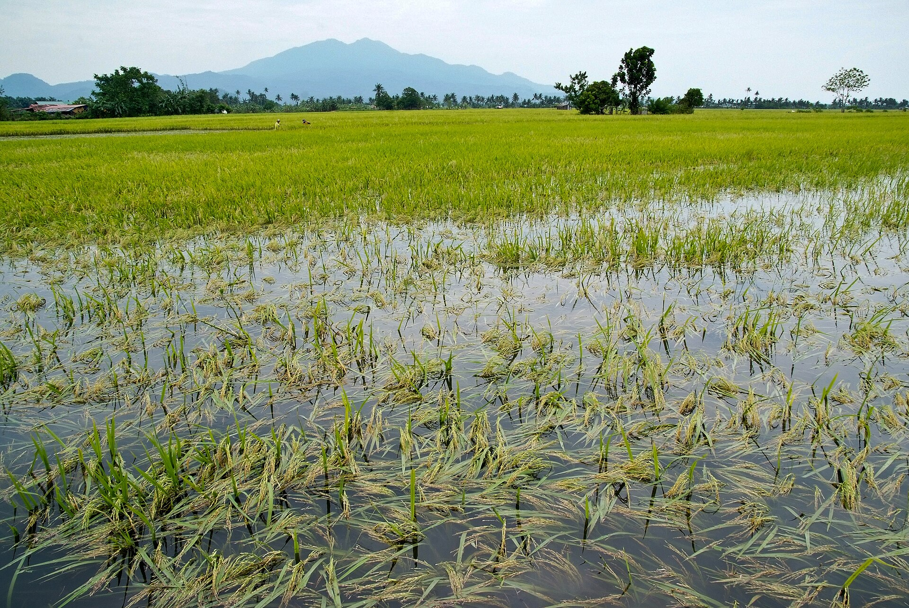
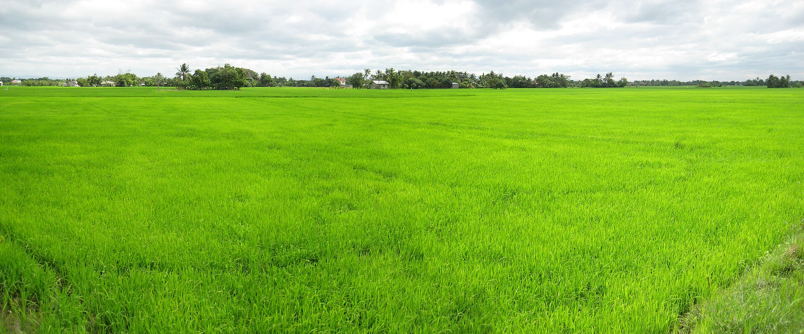

Under review
CLM-26-000418 · submitted 16 Feb 2026 · resubmitted 20 Feb 2026
CV Tani Makmur Demak
Rice · 5 of 6 insured parcels · 40,5 ha · Central Java floods, Feb 2026 · policy POL-JSD-26-004127 (Rice Flood & Drought Cover)
AiGRI pre-check
- Policy active on the loss date (10 Jan – 30 Apr 2026)
- Peril covered: flood
- Notice on time: filed 16 Feb, due 21 Feb
- 5 parcels match insured boundaries
- 16 photos with time and GPS inside the parcels
- No reused photos (perceptual-hash check)
- DMK-05: radar shows no flood (low confidence, dense canopy); 5 ground photos show standing water. Your call.
- Info request of 19 Feb answered with 2 photos on 20 Feb
Damage assessment
Claimed parcelFlood extent, Sentinel-1 8 FebDMK-06, outside the flood
| Parcel | ha | Flooded | Days | NDVI | Confidence |
|---|---|---|---|---|---|
| DMK-01 | 9,6 | 92% | 9 days | 0,72 → 0,18 | High |
| DMK-02 | 8,4 | 78% | 8 days | 0,70 → 0,26 | High |
| DMK-03 | 7,2 | 64% | 6 days | 0,69 → 0,35 | High |
| DMK-04 | 8,8 | 41% | 4 days | 0,71 → 0,49 | Medium |
| DMK-05 | 6,5 | Not detected | — | 0,68 → 0,55 | Low |
Before and after
Before · 2 Feb · S-1
After · 8 Feb · S-1
Flooded (S-1 VV)92%
Flood duration9 days
NDVI before → after0,72 → 0,18
Crop change−75%
ConfidenceHigh
Before · 2 Feb · S-1
After · 8 Feb · S-1
Flooded (S-1 VV)78%
Flood duration8 days
NDVI before → after0,70 → 0,26
Crop change−63%
ConfidenceHigh
Before · 2 Feb · S-1
After · 8 Feb · S-1
Flooded (S-1 VV)64%
Flood duration6 days
NDVI before → after0,69 → 0,35
Crop change−49%
ConfidenceHigh
Before · 2 Feb · S-1
After · 8 Feb · S-1
Flooded (S-1 VV)41%
Flood duration4 days
NDVI before → after0,71 → 0,49
Crop change−31%
ConfidenceMedium
Before · 2 Feb · S-1
After · 8 Feb · S-1
Flooded (S-1 VV)Not detected
Flood duration—
NDVI before → after0,68 → 0,55
Crop change−19%
ConfidenceLow
Radar can miss water under dense rice. Low confidence here; the 5 ground photos show standing water, and the adjuster decides.
Ground photos (16)

DMK-01 · 14 Feb, 07:12
DMK-01 · 4 Feb, 07:05 (before)DMK-02 · 14 Feb, 08:02
DMK-03 · 15 Feb, 07:20
DMK-04 · 15 Feb, 08:14
DMK-05 · 15 Feb, 06:58
Added 20 FebDMK-05 · 20 Feb, 07:31
Added 20 FebDMK-05 · 20 Feb, 07:33
What you can see
Only the 6 parcels covered by POL-JSD-26-004127 and this claim's evidence. Data shared with consent on 10 Jan 2026 (payload a91c3f0e…77e3).